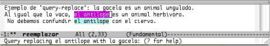

7. Buscar y Reemplazar
Pág.Anterior | Índice | Pág.Siguente
En el capítulo anterior hemos visto como buscar cadenas en un buffer que estamos editando. Con mucha frecuencia las búsquedas de una cadena no tienen otra finalidad que la de reemplazarla por otra.Es por ello que la funcionalidad de buscar-y-reemplazar se nos presenta como la combinación ideal a este propósito.
Vamos a considerar tres formas de realizar la operación de búsqueda y reemplazo de cadenas:
- Buscar y Reemplazar; Operación básica : Se limita a reemplazar todas las cadenas de búsqueda por otras predeterminadas.
- Buscar y Reemplazar previa confirmación (Query-Replace) : Búsqueda las cadenas pero, antes de proceder al su reemplazo, nos pide confirmación.
- Modo de Edición recursivo : Puede considerarse una variante de la anterior. Con query-replace en acción, activando el modo de edición recursivo, se nos permitirá editar el texto de las ocurrencias encontradas, manteniendo query-replace suspendido. Finalizada la edición y desactivado el modo recursivo, query-replace retomará el proceso de búsqueda y sustitución desde el punto en que lo dejó.
7.1 Buscar y Reemplazar: Operación básica.
Pág.Anterior | Índice | Inicio Página | Pág.Siguente
Para reemplazar todas las cadenas de búsqueda por otra predeterminada, desde la posición del cursor hasta el final de buffer, se procederá de la siguiente manera:
- Ejecutar el comando : M-x replace-string <Enter>.
- En el mini-buffer aparecerá el mensaje Replace string:
- Teclear en el mini-buffer la cadena_de_búsqueda y pulsar <Enter>
- Aparecerá el mensaje : Replace string cadena_de_búsqueda with:
- Teclear en el mini-buffer la cadena_de_reemplazo y pulsar <Enter>
- Se reemplazarán todas las cadena_de_búsqueda encontradas por la cadena_de_reemplazo introducida; desde la posición del cursor hasta el final del buffer.
Veamos, gráficamente, el comando C-s en acción:
7.2 Buscar y Reemplazar previa confirmación.( Query Replace)
Pág.Anterior | Índice | Inicio Página | Pág.Siguente
Nos puede interesar no realizar un reemplazo global de todas las cadenas de búsqueda encontradas, sino poder decidir, en cada ocurrencia encontrada, si proceder o no a su sustitución.
Para realizar los reemplazos de esta forma:
- Ejecutar el comando : M-% ; o la Opción de menú : Edit-->Replace.
- (En algunas vesiones; Edit-->Replace-->Replace String )
- En el mini-buffer aparecerá el mensaje Query replace:
- Teclear en el mini-buffer la cadena_de_búsqueda y pulsar <Enter>
- Aparecerá el mensaje : Query replace cadena_de_búsqueda with:
- Teclear en el mini-buffer la cadena_de_reemplazo y pulsar <Enter>
- A partir de este momento se iniciará la búsqueda y, en cada cadena encontrada Emacs nos preguntará si deseamos realizar o no la sustitución, mediante el siguiente mensaje en el mini-buffer:
- Query replacing cadena_de_búsqueda with ; cadena_de_reemplazo (? for help)
- Las posibles respuestas son:
- y : Procede al reemplazo. También puede utilizarse <Space>.
- n : No proceder al reemplazo. También puede utilizarse <Supr.>.
- . : Reemplazar esta cadena y salir.
- , : Reemplazar y mostrar el resultado antes de seguir,
pulsando y o <Space>.. - ! : Reemplazar el resto sin preguntar.
- ^ : Regresa a la anterior ocurrencia.
- q : Abandonar Query replacing .También puede utilizarse <Enter>.
- E : Modificar la cadena_de_reemplazo
- Estas opciones de respuesta aparecen en un buffer de ayuda que se abre tecleando ?
Veamos un ejemplo :
Vamos a iniciar la búsqueda de la cadena el antílope y su reemplazo por la cadena. la gacela
Tecleamos el comando M-% o, alternativamente, ejecutamos la opción de menú Edit-->Replace
En el mini-buffer aparece el mensaje Query replace:
Introducimos la cadena de búsqueda el antílope .
Tras pulsar <Enter> aparece el mensaje Query replace el antílope with: en el mini-buffer.
Introducimos la cadena de búsqueda la gacela .
Tras pulsar <Enter> vemos como el cursor se coloca inmediatamente despúes de la primera ocurrencia, resaltada en color lila. El resto de las ocurrencias son resaltadas en color azul.
Aparece el mensaje: Query replace el antílope with la gacela: (? for help)
Tras confirmar el reemplazo de la cadena de la primera ocurrencia tecleando y o mediante la tecla <Space> ,se realiza la sustitución de cadenas y el cursor pasa a la segunda ocurrencia.
|  |
En caso de recurrir a la ayuda, pulsando ? , aparecerá el buffer *Help* con las posibles "respuestas" al mensaje de solicitud de confirmación del reemplazo de cadenas. (Incluye las opciones correspondientes al Modo de edición recursivo , que se tratará en el siguiente apartado) i>
7.3 Modo de Edición recursivo
Pág.Anterior | Índice | Inicio Página | Pág.Siguente
Como ya se comentó al principio de éste capítulo, el modo de edición recursivo puede considerarse una variedad de Query replace, ya que sólo podremos activarlo en el curso de una búsqueda-reemplazo de este tipo.
Cuando estemos en modo recursivo, podremos desplazar el cursor a las ocurrencias encontradas y editarlas.
Los comandos implicados en el modo de edición recursivo son:
- C-r : Activa el modo recursivo. En la linea de modo aparece el modo de edición activo entre [ ] :
- C-M-c : Sale del modo recursivo y reinicia el query replace.
- C-] : Sale del modo recursivo y de query replace.
- C-w : Elimina la presente ocurrencia y entra en modo recursivo. En un comando útil si se desea personalizar la sustitución.
Recordar que estos comandos solo actuarán de la forma descrita si se ejecutan cuando se esta operando en query replace
Como podemos observar, los citados comandos se encuentran , en el buffer *Help* como opciones de query replace.
7.4 Búsquedas y Reemplazos: Sensibilidad a la caja tipográfica
Pág.Anterior | Índice | Inicio Página | Pág.Siguente
Por defecto, las básquedas en Emacs no distinguen entre mayúsculas y minúsculas. Es decir, no son sensibles a la caja tipográfica.
Esto es debido a que, por defecto, la opción de menú Options-->Case Insensitive Search se encuentra activada.
Comp puede facilmente deducirse, desactivando la citada opción pasaremos a un modo de búsqueda en el que se distinguirá entre mayúsculas y minúsculas : sensible a la caja tipográfica.
La sensibilidad a la caja de las búsquedas viene determinada por la variable case-fold-search. Por defecto, dicha variable está ajustada al valor t (true) que viene a significar: Ignora la caja excepto si el usuario utiliza combinación de mayúsculas y minúsculas, o todo en mayúsculas, en la cadena de búsqueda. Como se ha comentado mas arriba, esta es la opción que se presenta por defecto
La sensibilidad a la caja de la acción de reemplazo también puede ajustarse, en este caso através de la variable case-replace .Dicha variable viene, por defecto, ajustada al valor t que, como en el caso de las búsquedas, condiciona la sensibilidad a la caja de los reemplazos al formato de las palabras en la cadena original.
No existe una opción de menú para cambiar el valor de esta variable, por lo que, para cambiar el valor de t a nil , deberá procederse de la siguiente forma:
- Ejecutar el comando : M-x
- Teclear set-variable en el mini-buffer y pulsar <Enter>
- En el mini-buffer aparecerá el mensaje Set variable:
- Introducir el nombre de la variable, case-replace , y pulsar <Enter>.
- En el mini-buffer aparecerá el mensaje Set case-replace to value:.
- Introducir el nuevo valor que deseemos dar a la variable, en nuestro caso, nil , y pulsar <Enter>.
Este procedimiento descrito,es el procedimiento general de asignación de valores a una variable, aplicable también al cambio de valor de case-fold-search , si no deseamos utilizar el menú Options .
Debemos tener en cuenta que los cambios realizados, sea através del menú Options o bién mediante set-variable no son permanentes sino que afectarán solo a la sesión en curso. Cada nueva sesión de Emacs se iniciará con los valores por defecto.
Si deseáramos hacer permanentes los cambios realizados deberiamos :
- Si se realizaron através del menú Options , guardarlos mediante Options-->Save Options
- Modificando el archivo .emacs mediante la adición de las siguientes lineas:
- En el caso de case-fold-search : (setq-default case-fold-search nil ; require exact matches)
- En el caso de case-replace : (setq-default case-replace nil ; never change case when replacing)